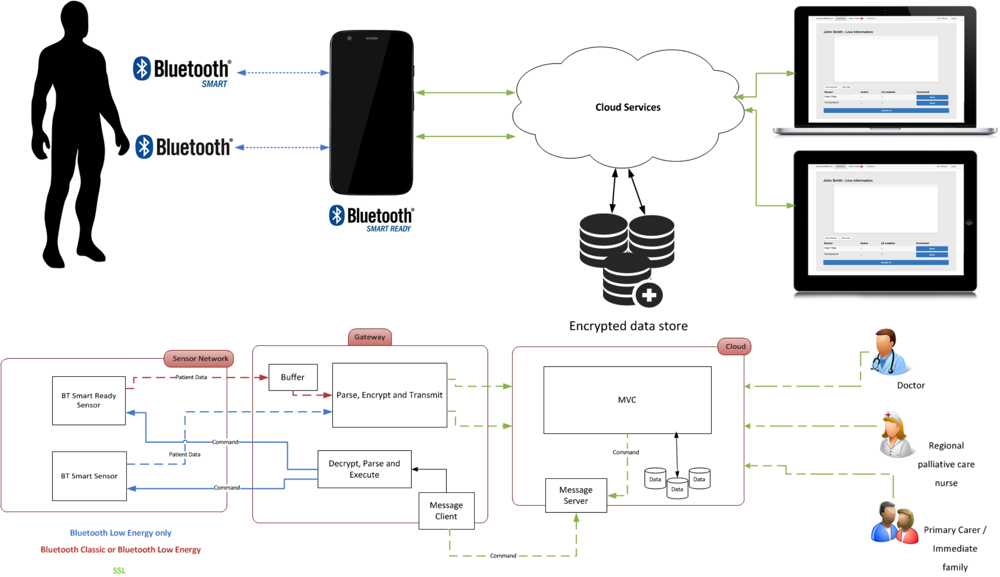
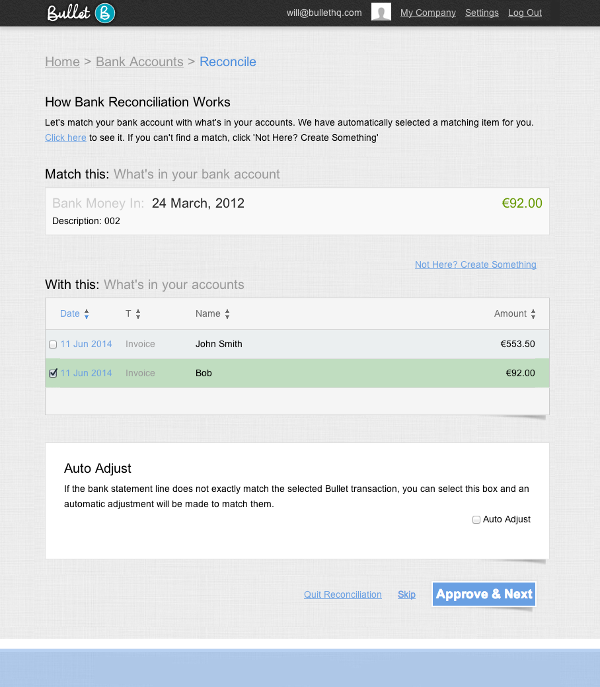
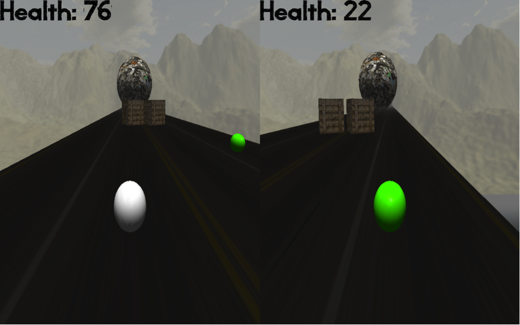
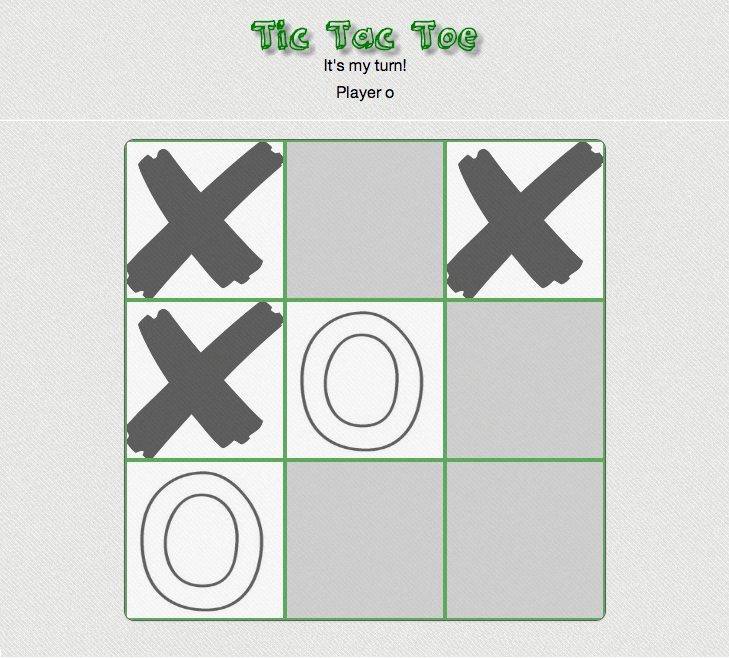

Here's more detail of some of the work I've done. If you want to know more, just get in touch!
The following is taken from the abstract section of my dissertation:
"Telemedicine is an important practice that removes the necessity for physical encounters between patients and physicians. Combined with the capabilities of remote monitoring systems, a patient can be monitored using physiological sensors which seamlessly gather data. Using an Internet of Things (IoT) model, non-invasive physiological sensors that capture a patient's current health status can be exposed through a Telemedicine platform. By closely monitoring patient's vital signs, physicians can capture a snapshot of a patient's well being. This is an important factor in the lives of palliative care patients, where focus is placed on quality of life.
This dissertation outlines a secure, cloud-enabled Telemedicine solution aimed at the field of palliative medicine. This dissertation plans to expose the Bluetooth 4.0 protocol in order to provide a multi-stream data transmission protocol of low and high bit-rate data. Use of an adaptive data stream enables efficient sensor traffic with capabilities of complex sensor data transmission in emergency situations and low bandwidth data that can provide episodic updates. Each patient sensor makes use of a gateway to transmit information to a cloud based service, which publishes current and historic data for individual patients. Secure storage, access and transmission of patient data is also an important concern. This dissertation outlines two security mechanisms using a combination of symmetric and asymmetric cryptography."
The following is a high-level overview of the system architecture:
With a combined total of 10 months working at Bullet, I worked on many different parts of the Bullet Accounts product. For instance, in order to integrate with Adverts.ie so that Bullet could be manage the Adverts store account, I designed and implemented a RESTful API for the Bullet Accounts product. Another feature I developed was Bank Reconciliation. Bank Reconciliation is the process of automatically reconciling all matching transactions in the two bank accounts. The feature allows a user to upload a bank statement and the system applies matching rules to each transaction so that they can be reconciled with the information in Bullet.
Here's a screenshot taken from Bullet's transaction reconciliation process:
Death run is a multiplayer split screen game where players have to race each other to the top of the slope whilst trying to avoid multiple different oncoming objects. The first player to reach the top of the platform wins the game. I got inspiration for this game from the Zombie Master mod for Half Life 2. The following is an in-game shot:

In the future I hope to work on adding a third player, whose role will be to manually control the obstacles in order to prevent the other players from reaching the top. I also plan to port the project to OpenGL ES so that the game can run on mobile devices.
I developed this game for one of the assignments in an Advanted Telecommunications course I took in third year of university. Having done a HTML5 minesweeper game using the canvas a few months previously, I decided to go a bit further by integrating with NodeJS

During my masters I worked with the LPC2468 microcontroller developing various small-scale embedded systems making use of peripheral modules and devices such as interrupt controllers, serial communication devices, LCD and touchscreen controllers and analogue-to-digital converters. I also did some further work using a real-time operating system (FreeRTOS).
In my spare time I also enjoy hacking around with the Arduino platform.